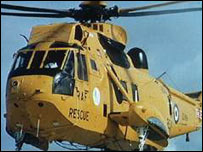

A Sea King helicopter was involved in the rescue
|
A 23-year-old climber is in a comfortable condition in hospital after falling 40 feet from a mountainside in north Wales.
The man, who is from the Birmingham area, fell at Craig
Ifan, a cliff side near the road at Tremadog in Gwynedd, which is often
used by climbers perfecting their skills.
He had been on his way to set up a climb when he slipped on the scree.
He was said to be in a "very comfortable" condition in hospital on Sunday with a suspected facial fracture.
Members of Aberglaslyn Mountain Rescue Team were also involved in the rescue.
The man was winched aboard an RAF Sea King helicopter from Valley in Anglesey and flown to hospital at Bangor.
Police say he will be reassessed by doctors on Monday, but it did not look as though he would be in hospital much longer.

LINKS TO MORE NORTH WEST WALES STORIES
|